西田厚聰
にしだ・あつとし
東芝社長・相談役
役割：Buy-Sell取引等の対象期間にトップを務めた
その後：2015年に相談役を辞任。2023年訴訟では相続人が被告となり請求棄却12
2008年度〜2026年10月
東芝では、工事進行基準、パソコン部品取引、映像事業の費用繰延べ、半導体在庫評価などで損失・費用を先送りし。利益を過大計上した。1
経営トップが各事業部門に高い利益目標を求める「チャレンジ」と、異論を許さない企業風土、取締役会・監査委員会・監査法人の監督不全が重なり。不適切な会計処理は2008年度から2014年度第3四半期まで続いた。1
2015年の発覚後、歴代3社長が辞任し、決算訂正、課徴金、監査法人処分、事業売却。上場廃止へ進んだ。旧経営陣への会社訴訟は、2026年10月の最高裁決定まで確認できる。2
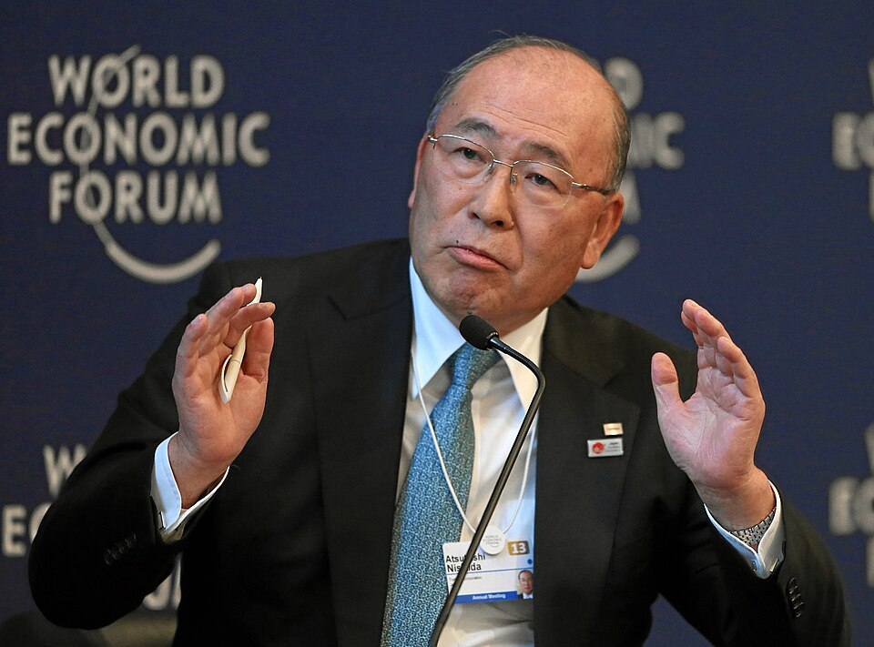
不適切な会計処理は、決算書の一行だけを変更するものではなかった。工事案件では原価総額の見積りを低く置くことで進捗率を高くし、売上を先に計上すると同時に、将来損失の引当金を小さくした。パソコン事業では期末の部品販売と買戻しの間に利益が記録され、映像事業では費用が翌期へ移された。半導体事業では標準原価の差額が在庫へ配賦され、完成品の原価が低くなった。こうした処理が複数年度にわたって重なったため、2015年の訂正では工事進行基準479億円、パソコン事業578億円。半導体事業371億円などの修正額が並んだ。13
東芝の不正会計は、一つの取引や一人の担当者に限定された問題ではなく、工事進行基準、映像事業の経費、半導体事業の在庫評価、パソコン事業の部品取引という複数の分野で。異なる会計処理が繰り返された問題だった。2008年度以降、リーマン・ショック、東日本大震災、円高。テレビ・パソコン事業の競争激化が重なった。東芝の報告書は、厳しい環境の下で利益目標達成への圧力が強まり、経営トップらを含む組織的関与が直接的原因になったと整理している。1
前述したように、各社内カンパニーにおいては、毎第1四半期及び第3四半期の期首において、月次ごとの予算が作成され、その達成を目指して事業が進められていた。そして、この作成された予算の達成及び見込みの状況については、毎月、社内カンパニー内において報告・検討が行われたのち、社長月例報告会と呼ばれる会議において、コーポレートPに対する報告がなされていた。 この社長月例においては、P から各 CP に対し、「チャレンジ」と称して設定した収益改善の目標値が示され、その目標達成を強く迫っており、業績不振のカンパニーに対しては、収益が改善しなければ当該担当カンパニーの事業からの撤退を示唆することもあった。とりわけ、不適切な会計処理が幅広く行われた 2011 年度から 2012 年度にかけては、東日本大震災及びそれを契機とする福島第一原子力発電所の事故の発生、タイの洪水による東芝の工場の水没、超円高の進行など、東芝の事業にとって極めて厳しい経営環境が続いていた。 P が示す「チャレンジ」のほとんどは、長期的な利益目標などの視点から設定されるものではなく、当期又は当四半期における利益を最大化するという観点（当期利益至上主義）から設定される目標達成値であった。 そのような経営方針から、各カンパニーにおいては、「チャレンジ」を達成するためには、当期末の経営成績どおりの会計処理を行うのではなく、実質的に来期以降の利益を先取りしたり、当期の損失や費用の計上を次期以降に先送りすることなどにより、当期における見かけ上の利益を予算やチャレンジの値に近づけるという不適切な会計処理を行わざるを得ない状況に追い込まれていた。
意味：不正会計を個別担当者の逸脱ではなく、達成困難な目標と短期利益偏重が生んだ構造として認定している。
経営陣は各社内カンパニーに高い利益目標を割り当て、社長月例報告会で達成状況を確認した。第三者委員会によれば、目標は長期の利益ではなく当期または当四半期の利益を最大化する観点から設定され、未達の場合には事業撤退を示唆することもあった。現場では、将来の損失や費用を翌期以降に先送りした。当期の数値を目標に近づける処理が選ばれた。明文の会計規程より上司の承認が優先され、適正な損失引当金を計上する案が承認されないと考えた部門が計上を断念した。2
工事進行基準では、工事収益総額と工事原価総額を見積もり、進捗に応じて売上と利益を計上する。将来損失が見込まれる場合には、工事損失引当金を計上する。しかし一部の案件では原価総額が過少に見積もられ、売上が過大に計上され、損失引当金が過少計上または未計上となった。2014年3月に受注した契約金額144億円の案件では、具体的な裏付けのないコスト削減策が織り込まれ、2014年度第2四半期に本来計上すべき10億円の引当金が計上されなかった。32
パソコン事業では、東芝が台湾のODM企業に部品を販売し、その後完成品を買い戻すBuy-Sell取引が行われた。期末に必要量を超える部品を販売すると、売上や利益が一時的に計上され、未実現利益の消去が適切でなければ利益が過大になる。映像事業やパソコン事業では費用を翌期に送る「キャリーオーバー」が行われ、半導体事業では前工程と後工程の標準原価の差額の一部が在庫に配賦され、完成品原価が減少したと金融庁は認定した。451
2015年2月12日、証券取引等監視委員会は工事進行基準案件などについて報告命令を出した。東芝は自己調査を進め、3月下旬に一部インフラ案件の会計処理に調査が必要な事項を把握し、4月3日に特別調査委員会を設置した。調査対象が広がったため、5月8日には外部専門家による第三者委員会を設置し、決算発表を延期した。第三者委員会は7月20日に報告書を提出し、翌21日、田中久雄。佐々木則夫らの辞任が発表された。16
2015年9月7日の過年度決算訂正では、2008年度から2014年度第3四半期までの税引前損益について累計2,248億円の修正が示された。修正後の税引前損益は累計3,582億円で、修正前5,830億円の約61.4％だった。内訳は工事進行基準479億円、映像事業61億円、パソコン事業578億円、半導体事業371億円、自主チェック294億円。固定資産減損465億円などである。12月7日に証券取引等監視委員会が課徴金勧告を行い、12月24日に金融庁が73億7,350万円の課徴金を決定した。17
株式会社東芝（以下「当社」という。）は、一部の工事進行基準適用案件において、工事損失引当金の過少計上及び売上の過大計上を行ったほか、映像事業、パソコン事業及び半導体事業等の一部において、売上原価の過少計上、費用の過少計上などを行った。 これらの結果、当社は、関東財務局長に対し、別紙１のとおり、金融商品取引法第172条の４第１項に規定する「重要な事項につき虚偽の記載がある」以下の有価証券報告書を提出したものである。 当社は、関東財務局長に対し、以下のとおり、金融商品取引法第172条の２第１項第１号に規定する「重要な事項につき虚偽の記載がある」発行開示書類を提出し、当該発行開示書類に基づく募集により有価証券を取得させたものである。 平成22年12月９日、平成21年４月１日から平成22年３月31日までの連結会計期間につき、売上原価の過少計上等により、同期間における連結当期純損益が53,943百万円の損失であるところを19,743百万円の損失と記載するなどした連結損益計算書を掲載した有価証券報告書を参照書類とする発行登録追補書類を提出し、同発行登録追補書類に基づく募集により、同年12月15日、社債券を120,000,000,000円で取得させた。
意味：監視委は、不正会計だけでなく、虚偽の開示書類を参照した社債取得まで法令違反の事実として整理した。
金融庁は新日本有限責任監査法人について、長期間の担当による東芝のガバナンスへの過信、東芝の説明・資料への批判的検証不足。監査証拠の不足を認定した。監査チーム内の情報共有と連携も十分に機能せず、四半期末に製造損益が拡大し翌月に悪化する異常値が繰り返されていた。東芝自身の報告書も、経営トップらの行為によって内部統制の一部が無効化され、取締役会、監査委員会、内部監査。コーポレート部門の牽制が十分に働かなかったと記した。41
このため、問題は会計数値の訂正だけでなく、誰が目標を決め、誰が処理を承認し。誰が検証できなかったのかという人の動きとして現れた。西田厚聰、佐々木則夫、田中久雄の3代の社長体制が対象期間と重なり、現場の事業部門、財務・監査部門。監査法人の判断が積み重なった。1
当監査法人においては、 監査チームのメンバー構成が、長期間にわたり東芝や東芝の子会社の監査を担当した者が中心となっていることなどにより、東芝のガバナンスへの過信が生じ、東芝側の説明や提出資料に対して、批判的な観点からの検証が十分に実施できなかった。 監査対象事業ごとに分業体制で監査を進めていたにもかかわらず、チーム内での情報共有や連携がうまく機能しなかった。 東芝は、パソコンを外部に製造委託するにあたって、海外子会社を通じて仕入れた部品を外部製造委託会社に調達価格を上回る価格で販売し、その差額分を、海外子会社は東芝に対する未払金として計上し、東芝は海外子会社に対する未収入金として計上することによって、同額の製造原価を減額して計上していた。 東芝は、平成21年３月期第２四半期以降、四半期末ごとに正常な生産行為に必要な数量を超えた部品を外部製造委託会社に販売した結果、パソコン事業の製造損益は四半期末月に利益が拡大し、翌月には悪化する状況が繰り返され、時期を追うごとに製造損益の振れ幅は拡大し、平成25年３月期には、四半期末月の製造原価がマイナスとなる異常値となった。
意味：監査法人側にも、長期関与による過信や情報共有不足と明確な異常値の見逃しがあったと金融庁が認定している。
2015年の問題は、東芝の資金調達と事業再編にも影響した。2016年に医療機器事業などの売却が進み、2017年3月29日にはウェスチングハウスが米国連邦破産法11章の適用を申請した。東芝メモリは2018年6月1日にPangeaへ約2兆3億円で譲渡され、東芝資料では売却益約9,700億円とされた。2023年12月20日、JPXは東芝の上場廃止日を迎えた。旧役員5人への会社訴訟では、2023年に一審が3人の責任を一部認めたが、2025年の高裁判決と2026年10月14日の最高裁決定については。調査メモが報道ベースで高裁判決の確定を確認している。891011
発覚後の責任追及は、法人への行政処分と個人への民事責任で異なる経路を取った。東芝は旧役員5人に損害賠償を請求し、東京地方裁判所は佐々木則夫、田中久雄。久保誠の3人について合計4億円を認容した。一方、西田厚聰と村岡富美雄への請求は棄却された。その後、東京高等裁判所は一審を取り消したと報道され、最高裁が上告を退けたと報道された。法人が虚偽記載を認め課徴金を納付したことと、役員個人の民事責任が否定されたことは、調査メモ上は別の成立要件による結果として整理されている。121311
2015年4月3日の特別調査委員会設置時、東芝株は512.4円から翌取引日に487.4円へ下落した。5月8日の第三者委員会設置と無配公表後は、483.3円から翌取引日に403.3円へ下落した。東京地方裁判所は、訂正報告書提出後の2015年9月29日に291.9円まで下落した時系列を認定した。14
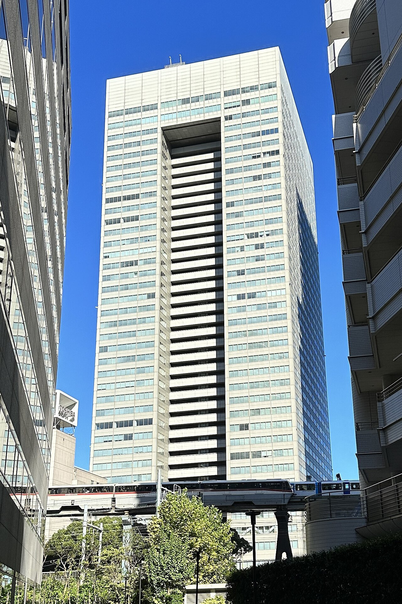
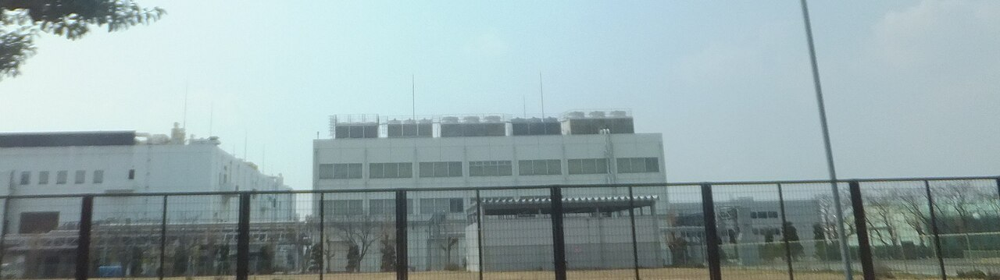
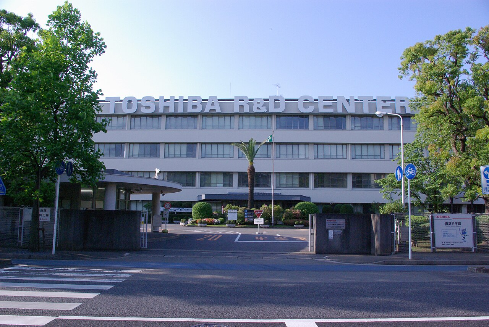
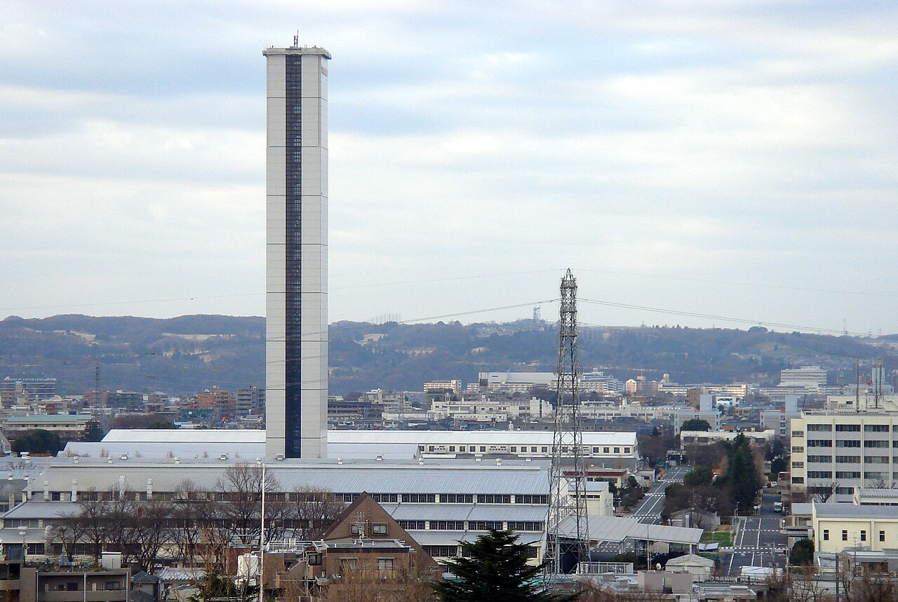
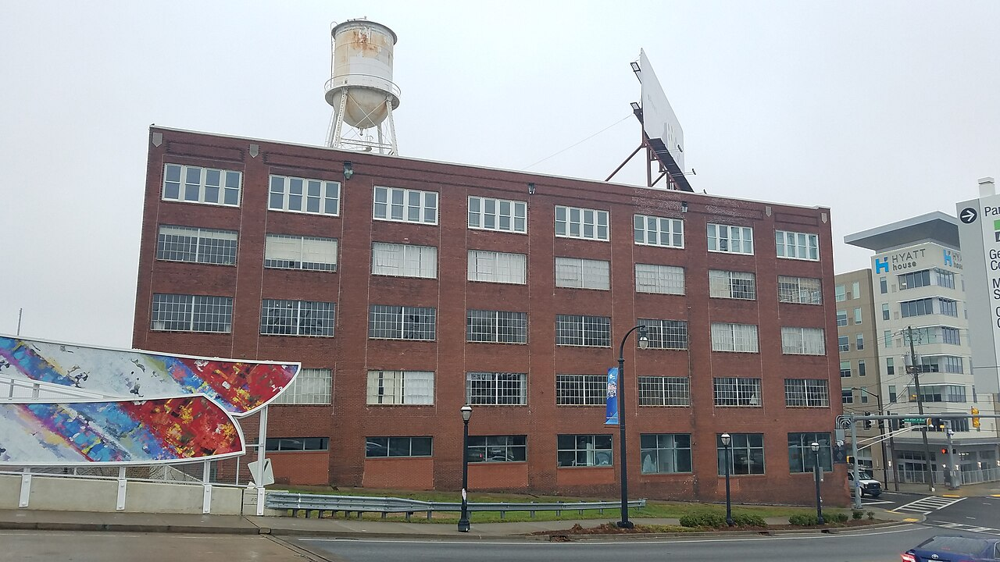
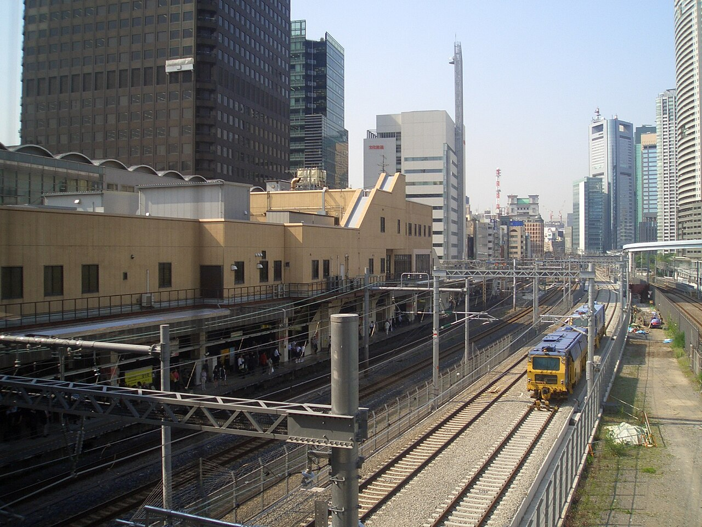
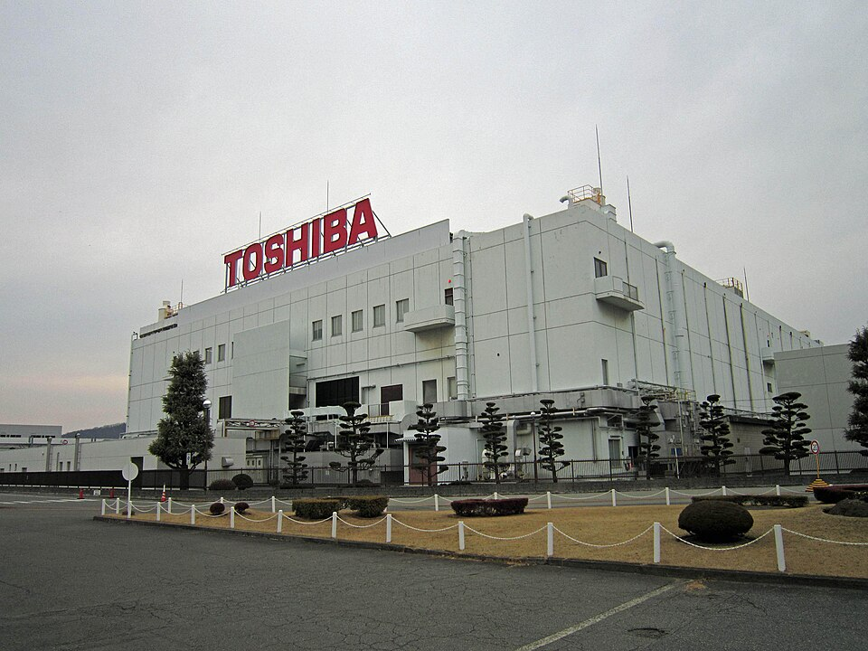
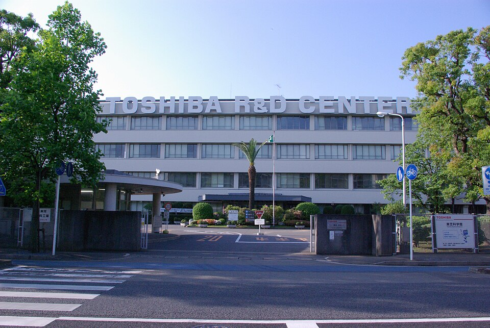
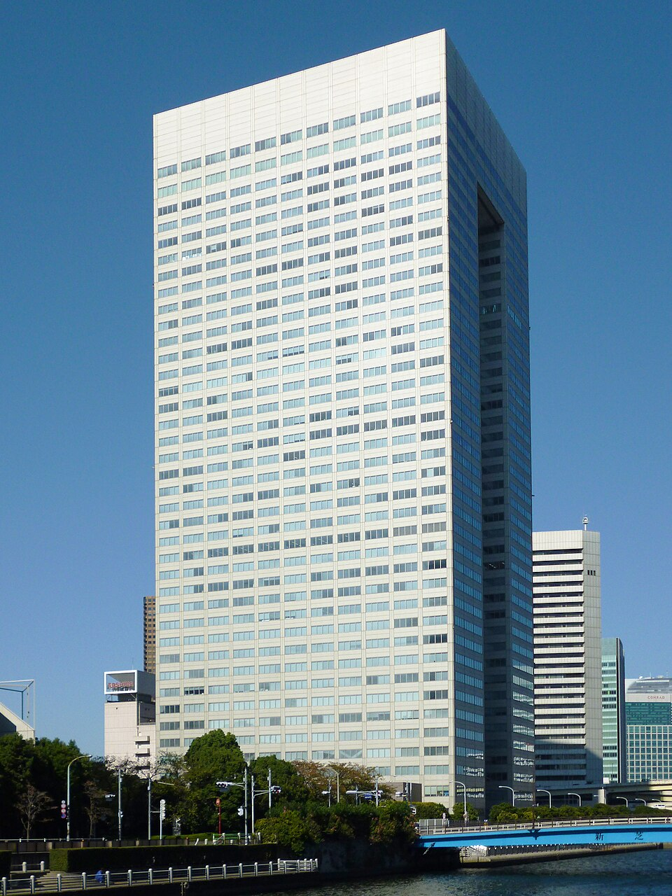
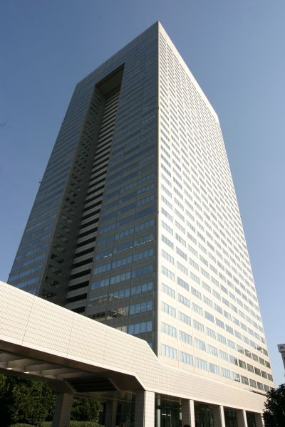
| 東芝本社・浜松町ビルディング | 東京都港区芝浦1-1-1 | 不正会計当時の本社、元役員・第三者委員会の中心 | 1225 |
| 東京証券取引所 | 東京都中央区日本橋兜町2-1 | 特設注意市場銘柄指定・上場廃止を決定 | 18 |
| 東京地方裁判所 | 東京都千代田区霞が関1-1-4 | 旧役員損害賠償訴訟の一審 | 12 |
| 金融庁 | 東京都千代田区霞が関3-2-1 | 課徴金・監査法人処分 | 7 |
| 証券取引等監視委員会 | 東京都千代田区霞が関3-2-1 | 開示検査・課徴金勧告 | 3 |
| 東芝府中事業所 | 東京都府中市東芝町1 | 東芝の主要製造・技術拠点 | 126 |
| 東芝姫路半導体工場 | 兵庫県揖保郡太子町鵤300 | 半導体事業の製造拠点 | 127 |
| 東芝小向事業所 | 神奈川県川崎市幸区小向東芝町1 | 研究開発・半導体関連拠点 | 128 |
| Westinghouse Electric Company Building | 米国ジョージア州アトランタ | ウェスチングハウス関連の象徴的建物。東芝の原発損失案件所在地そのものではない | 29 |
| 米国連邦破産裁判所・ニューヨーク南部地区 | 米国ニューヨーク州ホワイトプレーンズ | ウェスチングハウスChapter 11手続の裁判所所在地 | 8 |
東芝では、事業部門が高い利益目標の達成を報告し、工事原価や損失引当金、部品取引、費用。在庫原価の処理を通じて財務諸表の利益を押し上げた。虚偽記載を含む有価証券報告書は社債発行の参照書類にもなり、発覚後は課徴金と事業売却につながった。31
にしだ・あつとし
東芝社長・相談役
役割：Buy-Sell取引等の対象期間にトップを務めた
その後：2015年に相談役を辞任。2023年訴訟では相続人が被告となり請求棄却12
ささき・のりお
東芝社長・副会長
たなか・ひさお
東芝社長
むらおか・ふみお
東芝副社長・財務関係役員
役割：役員責任調査の対象
その後：2023年請求棄却12
くぼ・まこと
東芝副社長・監査委員会委員長等
むろまち・まさし
東芝会長・社長
役割：2015年の危機対応時の社長
その後：再建・ガバナンス改革を担った1
うえだ・ひろかず
第三者委員会委員長、元東京高検検事長
役割：第三者委員会の調査報告書を取りまとめた
その後：第三者委員会の調査を終結1
まつい・ひでき
第三者委員会委員
役割：弁護士として調査した
その後：第三者委員会の調査を終結1
いとう・ひろよし
第三者委員会委員・公認会計士
役割：会計処理を検証した
その後：第三者委員会の調査を終結1
やまだ・かずやす
第三者委員会委員・公認会計士
役割：会計処理を検証した
その後：第三者委員会の調査を終結1
もり・のぶちか
金融庁長官
役割：東芝への課徴金を決定した
その後：2015年12月24日に73億7,350万円を命令7
東芝監査法人
役割：監査証明と監査手続の不十分さを行政処分で指摘された
その後：21億1,100万円の課徴金等4
しまだ・たろう
東芝社長CEO
役割：2023年の上場廃止・旧役員訴訟対応時の社長
その後：東芝の上場廃止時の経営トップ12
東芝の米国連結子会社
役割：原子力新規プラント建設プロジェクトを受注した
その後：2017年3月29日にChapter 11を申請8
東芝メモリ買収主体
役割：東芝メモリ全株式の譲渡先
その後：2018年6月1日に約2兆3億円で譲渡完了9
相関図は、3代の経営トップ、財務・監査側、第三者委員会、監査法人・当局。事業売却先を分けて示す。線の種類は、協力、対立、告発、金銭、上下関係。闇の人脈に関する接点を表す。
上司と部下。西田、佐々木、田中の3代の社長体制のもとで会計問題が継続した。第三者委員会は個人の単独行為ではなく、歴代トップを含む組織的関与を問題にした。東芝1
上司と部下。佐々木の後任として田中が社長に就任し、トップ交代後も利益目標達成圧力が継続した。東芝1
上司と部下。田中が執行トップ、久保が財務・監査側の役職を担い、会社訴訟で双方が責任対象となった。東芝12
盟友・後継者関係。田中は西田・佐々木に続く社長で、三代の経営体制が不正会計期間と重なる。東芝12
上司と部下。佐々木が社長・副会長、久保が監査委員会側を担い、2023年の会社訴訟で同時に責任認定された。東芝12
上司と部下。2人は元役員5人として同一訴訟の被告となった。東芝12
上司と部下。「チャレンジ」によって事業部門へ高い目標が割り当てられ、未達を許さない圧力が会計操作の背景となった。東芝1
対立・確執。経営トップの要求に対して財務・経営監査部門が十分な牽制機能を発揮しなかった。東芝1
資金の出し手と受け手。東芝が外部専門家に調査を委嘱し、報告書を受領した。東芝1
盟友。第三者委員会の委員長と委員として調査を共同実施した。東芝1
盟友。2人の公認会計士が第三者委員会で会計処理を検証した。東芝1
対立・確執。東芝の説明を監査法人が十分に批判検証できず、後に監査法人が行政処分を受けた。金融庁4
対立・確執。SESCの報告命令を起点に、東芝の自己調査・第三者委員会調査へ進んだ。東芝1
対立・確執。不正会計を理由に特設注意市場銘柄指定・上場契約違約金の対象となった。JPX18
裏切り・告発。東芝自身が元経営陣の任務懈怠を主張し、2015年に損害賠償を提起した。東芝12
資金の出し手と受け手。2023年の公開買付け・株式併合を経て、東芝は非上場化した。東芝30
該当人物・公的結論。本事件について、警察等の公的資料により不正会計と結び付けられた自殺・不審死は本調査で確認できない。
その途中で、このような不適切な会計処理を改善しようとの試みも見られたが、改善のためには多額の損失の計上を余儀なくされるところ、業績を悪化させてまで一挙に改善を実行するという抜本的な対応を講じるには至らず、東芝における不適切な会計処理は、2013年度には部分的に改善されたものの、その後も今回の発覚まで継続された。 4 上司の意向に逆らうことができないという企業風土 東芝においては、上司の意向に逆らうことができないという企業風土が存在していた。 このため、経営トップからの「チャレンジ」が行われた結果、経営トップの意向を受けたCP、その下の事業部長、さらにその下の従業員らは、上司の意向に沿って目標を達成するために、不適切な会計処理を継続的に実行していた。また、この企業風土の下、東芝の決算上、相当程度の影響を生じさせる事項については、経理規程等において定められた明文上のルールに基づく会計処理を行う前に、順次、上司の承認を求め、その承認が得られなければ実行できないという事実上のルールが存在していた。 そのような者の下では、当該案件について必要な損失引当金が計上されないばかりか、当該CPのそのような考えを知った営業部は、CPやGCEOに適時・適切な会計処理の承認を求めても到底得られないだろうと考えるようになり、工事損失引当金の計上を必要とする案件があっても、その計上を断念するようになっていた。
意味：明文化された会計ルールより上司の承認が優先され、現場が適正処理を諦める仕組みを示す。
調査メモで、暴力団、総会屋、仕手筋、政治家・政党への不正献金。海外口座への資金移転は確認できない。公表資料で確認できる接点は、ウェスチングハウスの原発案件、東芝メモリの買収、2023年の日本産業パートナーズによる買収であり。闇社会との関係を示すものではない。
組織名・人物 確認できない
組織名・人物 確認できない
組織名・人物 確認できない
政治家・政党 確認できない
会社・口座 確認できない
Westinghouse、CB&I等 指摘
Pangea、ベイン、SK hynix。HOYA等 認定
JIP、TBJH 認定
当監査法人においては、 監査チームのメンバー構成が、長期間にわたり東芝や東芝の子会社の監査を担当した者が中心となっていることなどにより、東芝のガバナンスへの過信が生じ、東芝側の説明や提出資料に対して、批判的な観点からの検証が十分に実施できなかった。 監査対象事業ごとに分業体制で監査を進めていたにもかかわらず、チーム内での情報共有や連携がうまく機能しなかった。 東芝は、パソコンを外部に製造委託するにあたって、海外子会社を通じて仕入れた部品を外部製造委託会社に調達価格を上回る価格で販売し、その差額分を、海外子会社は東芝に対する未払金として計上し、東芝は海外子会社に対する未収入金として計上することによって、同額の製造原価を減額して計上していた。 東芝は、平成21年３月期第２四半期以降、四半期末ごとに正常な生産行為に必要な数量を超えた部品を外部製造委託会社に販売した結果、パソコン事業の製造損益は四半期末月に利益が拡大し、翌月には悪化する状況が繰り返され、時期を追うごとに製造損益の振れ幅は拡大し、平成25年３月期には、四半期末月の製造原価がマイナスとなる異常値となった。
意味：監査法人側にも、長期関与による過信や情報共有不足と明確な異常値の見逃しがあったと金融庁が認定している。
| 旧経営陣 | 0円 | 0円 | 短期的な目標・市場評価の維持可能性。個人の経済的利益額は未確認 | 1 |
| 株主 | 0億円 | 2248億円 | 決算訂正、株価下落、無配。上場廃止。不利益総額は未確認 | 18 |
| 社債投資家 | 0億円 | 1500億円 | 虚偽記載を含む有報を参照した社債1200億円・300億円 | 3 |
| 監査法人 | 0億円 | 21.11億円 | 課徴金21億1,100万円と行政処分 | 4 |
| 国庫 | 94.845億円 | 0億円 | 東芝課徴金73億7,350万円と監査法人課徴金21億1,100万円の合計 | 74 |
| 東芝メモリ買収側 | 20003億円 | 0億円 | 約2兆3億円でメモリ事業を取得 | 9 |
| 東芝 | 9700億円 | 0億円 | 東芝メモリ売却益約9,700億円。ただし優良事業を失った | 9 |
| 本調査で確認した判決文・行政資料 | 未確認 | 刑事有罪判決・刑事量刑は確認できない |
刑事有罪判決・刑事量刑。起訴・不起訴の詳細は未確認31
| 金融庁 | 2015-12-24 | 課徴金73億7,350万円 |
金融商品取引法上の虚偽記載。確定7
| 金融庁 | 2015-12-22 | 課徴金21億1,100万円、業務改善等 |
虚偽証明。確定4
| 金融庁 | 2015-12-22 | 懲戒処分等 |
監査手続・虚偽証明に関する処分。確定4
| 東京証券取引所・名古屋証券取引所 | 2015-09-14 | 特設注意市場銘柄指定、上場契約違約金 |
上場規則上の重大な問題。2017年10月11日に指定解除。2023年12月20日に上場廃止1810
| 東京地方裁判所 | 2023-03-28 | 佐々木1億円、田中1億円、久保2億円を認容。西田・村岡への請求棄却 |
| 東京高等裁判所 | 2025-03-19 | 一審を取り消し、旧経営陣側への請求を棄却したと報道 |
| 最高裁判所 | 2026-10-14 | 東芝の上告を退け、高裁判決が確定したと報道 |
前述したように、各社内カンパニーにおいては、毎第1四半期及び第3四半期の期首において、月次ごとの予算が作成され、その達成を目指して事業が進められていた。そして、この作成された予算の達成及び見込みの状況については、毎月、社内カンパニー内において報告・検討が行われたのち、社長月例報告会と呼ばれる会議において、コーポレートPに対する報告がなされていた。 この社長月例においては、P から各 CP に対し、「チャレンジ」と称して設定した収益改善の目標値が示され、その目標達成を強く迫っており、業績不振のカンパニーに対しては、収益が改善しなければ当該担当カンパニーの事業からの撤退を示唆することもあった。とりわけ、不適切な会計処理が幅広く行われた 2011 年度から 2012 年度にかけては、東日本大震災及びそれを契機とする福島第一原子力発電所の事故の発生、タイの洪水による東芝の工場の水没、超円高の進行など、東芝の事業にとって極めて厳しい経営環境が続いていた。 P が示す「チャレンジ」のほとんどは、長期的な利益目標などの視点から設定されるものではなく、当期又は当四半期における利益を最大化するという観点（当期利益至上主義）から設定される目標達成値であった。 そのような経営方針から、各カンパニーにおいては、「チャレンジ」を達成するためには、当期末の経営成績どおりの会計処理を行うのではなく、実質的に来期以降の利益を先取りしたり、当期の損失や費用の計上を次期以降に先送りすることなどにより、当期における見かけ上の利益を予算やチャレンジの値に近づけるという不適切な会計処理を行わざるを得ない状況に追い込まれていた。
意味：不正会計を個別担当者の逸脱ではなく、達成困難な目標と短期利益偏重が生んだ構造として認定している。
その途中で、このような不適切な会計処理を改善しようとの試みも見られたが、改善のためには多額の損失の計上を余儀なくされるところ、業績を悪化させてまで一挙に改善を実行するという抜本的な対応を講じるには至らず、東芝における不適切な会計処理は、2013年度には部分的に改善されたものの、その後も今回の発覚まで継続された。 4 上司の意向に逆らうことができないという企業風土 東芝においては、上司の意向に逆らうことができないという企業風土が存在していた。 このため、経営トップからの「チャレンジ」が行われた結果、経営トップの意向を受けたCP、その下の事業部長、さらにその下の従業員らは、上司の意向に沿って目標を達成するために、不適切な会計処理を継続的に実行していた。また、この企業風土の下、東芝の決算上、相当程度の影響を生じさせる事項については、経理規程等において定められた明文上のルールに基づく会計処理を行う前に、順次、上司の承認を求め、その承認が得られなければ実行できないという事実上のルールが存在していた。 そのような者の下では、当該案件について必要な損失引当金が計上されないばかりか、当該CPのそのような考えを知った営業部は、CPやGCEOに適時・適切な会計処理の承認を求めても到底得られないだろうと考えるようになり、工事損失引当金の計上を必要とする案件があっても、その計上を断念するようになっていた。
意味：明文化された会計ルールより上司の承認が優先され、現場が適正処理を諦める仕組みを示す。
本案件のうちいくつかの案件については、P、GCEO 又は CFO といった経営トップが意図的な見かけ上の当期利益の嵩上げの実行や費用・損失計上の先送りの実行又はその継続を認識したのに、中止ないし是正を指示しなかったものが認められる。また工事進行基準案件の中には、社内カンパニーから工事損失引当金の計上の承認を求められたのに対して、経営トップがこれを拒否したり先延ばしの方針を示したと認められる案件がある。 また、PC 事業においては、経営トップが、ODM 部品の押し込みによる見かけ上の利益の嵩上げを行わざるを得ない状況になりかねないことを認識しつつ、社内カンパニーに対して厳しい「チャレンジ」を課してそのような状況に追い込んだり、社内カンパニー側が ODM 部品の押し込みによる見かけ上の利益の嵩上げを解消する意向を示したのに対して難色を示した事実も認められる。
意味：報告書が、経営トップの単なる監督不足ではなく、認識後も是正しなかった対応を具体的に指摘している。
佐々木則夫Ｐは、「四半期毎に多額の利益が出ているのは、大半が Buy-Sell 取引によるものとの認識はあった。社長就任間もなく、Buy-Sell 取引は違法ではないとの説明を受けていたが、自分から Buy-Sell 取引により利益を嵩上げするように指示したことはなく、事業として不健全なことなので、量を減らすように言い続けていた」と述べている。 しかし、前述の経緯からすれば、佐々木則夫Ｐは、ODM 部品の押し込みの量を減らすよう CP に伝えていた事実は認められるものの、あくまで PC 事業で出た利益により減らすよう述べているだけであり、CP が損失を計上しても量を減らそうとした場合には難色を示していた。 そして、佐々木則夫Ｐは、予算を達成するという観点から CP に高い「チャレンジ」を課して、その必達を求めたため、CP としては四半期末の大量の Buy-Sell 取引により利益を嵩上げせざるを得ない状況に追い込まれ、その実行を継続していたものと認められる。
意味：本人の説明と委員会の認定を並べ、表面的な縮小指示と、損失計上を伴う是正への消極姿勢の緊張を示す。
上述したように、工事進行基準の会計処理を行うには、各四半期末での工事収益総額と工事原価総額の見積りと各四半期に発生した工事原価の測定が必要になる。この点、工事収益総額は見積りではあるが主に顧客との交渉によって定まり、また、工事原価は実際に発生した費用の集計であることから、一般的には、社内で行う工事原価総額の見積もりによる虚偽表示のリスクが高い。具体的には、工事原価総額が過少見積もりとなった場合、会計上は以下の虚偽表示が発生する。 (1) 売上の過大計上 各四半期末での工事原価総額が過少見積もりとなった場合、工事進捗度が過大となるため、売上が過大計上されることになる。 (2) 工事損失引当金（受注損失引当金）の過少計上又は未計上 ロスコン工事において、各四半期末での工事原価総額が過少見積もりとなった場合、工事損失引当金（受注損失引当金）が過少計上される又は計上されないことになる。
意味：工事原価の見積りを操作すると、売上の前倒しと損失引当金の未計上が同時に起きる会計上の構造を説明している。
本案件は、電力社が、2014年3月に、取引先R社から火力発電所向けの発電設備等を納期2020年6月（当初）、契約金額144億円で受注した案件である。 R案件において、2014年9月時点で工事損失の発生が見込まれていたが、会計上は具体的な裏付けのないコスト削減策を織り込む等により、最終的には見積工事原価総額が見積工事収益総額を下回るように見積り、工事損失引当金が計上されなかった。しかし、本来は、2014年度第2四半期時点において、工事損失引当金（10億円）を計上すべきであった。
意味：抽象的な制度論ではなく、損失見込みを楽観的なコスト削減策で覆い、10億円の引当金を計上しなかった具体例である。
株式会社東芝（以下「当社」という。）は、一部の工事進行基準適用案件において、工事損失引当金の過少計上及び売上の過大計上を行ったほか、映像事業、パソコン事業及び半導体事業等の一部において、売上原価の過少計上、費用の過少計上などを行った。 これらの結果、当社は、関東財務局長に対し、別紙１のとおり、金融商品取引法第172条の４第１項に規定する「重要な事項につき虚偽の記載がある」以下の有価証券報告書を提出したものである。 当社は、関東財務局長に対し、以下のとおり、金融商品取引法第172条の２第１項第１号に規定する「重要な事項につき虚偽の記載がある」発行開示書類を提出し、当該発行開示書類に基づく募集により有価証券を取得させたものである。 平成22年12月９日、平成21年４月１日から平成22年３月31日までの連結会計期間につき、売上原価の過少計上等により、同期間における連結当期純損益が53,943百万円の損失であるところを19,743百万円の損失と記載するなどした連結損益計算書を掲載した有価証券報告書を参照書類とする発行登録追補書類を提出し、同発行登録追補書類に基づく募集により、同年12月15日、社債券を120,000,000,000円で取得させた。
意味：監視委は、不正会計だけでなく、虚偽の開示書類を参照した社債取得まで法令違反の事実として整理した。
当監査法人においては、 監査チームのメンバー構成が、長期間にわたり東芝や東芝の子会社の監査を担当した者が中心となっていることなどにより、東芝のガバナンスへの過信が生じ、東芝側の説明や提出資料に対して、批判的な観点からの検証が十分に実施できなかった。 監査対象事業ごとに分業体制で監査を進めていたにもかかわらず、チーム内での情報共有や連携がうまく機能しなかった。 東芝は、パソコンを外部に製造委託するにあたって、海外子会社を通じて仕入れた部品を外部製造委託会社に調達価格を上回る価格で販売し、その差額分を、海外子会社は東芝に対する未払金として計上し、東芝は海外子会社に対する未収入金として計上することによって、同額の製造原価を減額して計上していた。 東芝は、平成21年３月期第２四半期以降、四半期末ごとに正常な生産行為に必要な数量を超えた部品を外部製造委託会社に販売した結果、パソコン事業の製造損益は四半期末月に利益が拡大し、翌月には悪化する状況が繰り返され、時期を追うごとに製造損益の振れ幅は拡大し、平成25年３月期には、四半期末月の製造原価がマイナスとなる異常値となった。
意味：監査法人側にも、長期関与による過信や情報共有不足と明確な異常値の見逃しがあったと金融庁が認定している。
問）東芝の不正会計問題についてお伺いします。昨日、証券取引等監視委員会から東芝に課徴金納付を命じるよう金融庁に勧告が発せられましたが、改めて東芝の不正会計問題について大臣の所感や今後の対応についてお聞かせください。 答）昨日、証券取引等監視委員会から、東芝が提出した過年度の有価証券取引書等に、重要な事項について虚偽の記載があるということが認められたとして、金融商品取引法に基づく課徴金納付命令を発出するように勧告がなされたということに関しては承知いたしております。また、金融庁において、この勧告を受けて、12月７日、審判手続の開始を決定しております。今回のケースは、かなり長い時間にわたって虚偽の記載が行われたということで、これは甚だ遺憾な話なのだと思っております。いずれにしても、今後、証券取引の公正及び投資者保護に対して、厳正な対処をしていかなければいけないだろうと思っています。 問）東芝の問題で２点お伺いします。まず昨日の証券取引等監視委員会の説明で、今回はあくまで開示検査での課徴金勧告ということで、将来的な東芝幹部の刑事告発の可能性は否定するものではないという説明だったのですけれども、大臣、今後東芝の幹部の刑事責任について、どのようにお考えになっていらっしゃるのか、お聞かせください。 答）長期にわたって、かなり虚偽の記載がなされていたという事実に基づいて、課徴金命令を発出するよう勧告が行われたものだということはよく承知していますけれども、課徴金納付命令は告発を妨げるものではない。
意味：政府側の公式会見でも、長期継続性を問題視し、課徴金と刑事告発の可能性を別問題として扱っている。
本件において本件調査対象者の一部につき損害賠償責任（会社法 423 条 1 項）が認められる事案の概要は、以下のとおりである。各案件の内容の詳細については後記 7.2 以降をそれぞれ参照されたい。 本調査の結果によれば、東芝の連結子会社及び各カンパニーにおける複数のインフラ関連案件において、当該案件から発生すると見込まれる損失額が過小に見積もられ、適正な金額の損失引当金が適時に計上されなかったとの事実が認められた。本委員会が本件調査対象者の一部につき法的責任が認められると判断した事案及び調査検討結果の概要は、以下のとおりである。 東芝の米国連結子会社である Westinghouse Electric Company LLC（以下「WEC」という。）は、2007年から2009年にかけて、AP1000と称する加圧水型原子炉を用いた原子力新規プラント建設プロジェクト等を、契約金額合計■□米ドル（■■□■）で受注した（以下「G案件」という。）。G案件では、設計変更等によりコストが増加し、WECの会計監査を務める米国会計事務所から、2013年度第2四半期末の時点で、見積工事原価総額の3億8500万米ドルの増加が見込まれる状態であるとの指摘がされた。
意味：東芝自身の責任調査委員会も、複数案件で損失引当金が遅れ、一部役員に会社法上の責任が認められる可能性を明記した。
被告東芝は、平成２７年４月３日、工事進行基準案件に係る会計処理の適正性を検証することを目的として特別調査委員会を設置する旨公表し、同日以降、インフラ工事の一部で不適切な会計処理があった可能性があるなどと報じられたところ、同日時点で５１２．４円であった被告株式の株価は、翌取引日の同月６日には４８７．４円に下落した。 その後、株価は４７８．６円から４９５．８円の間にあったが、同年５月８日、特別調査委員会の調査の結果、更なる調査が必要として第三者委員会を設置すること及び平成２６年度通期の業績予想は未定であるものの平成２７年３月末日を基準日とする剰余金の配当は無配とすることを公表したところ、同年５月８日時点で４８３．３円であった株価は、翌取引日の同月１１日に４０３．３円にまで下落した。 そうすると、本件虚偽記載の原因となった不適切会計の可能性が公表された同年４月３日（５１２．４円）から、本件訂正報告書が提出された後１か月以内で最も値を下げた同年９月２９日（２９１．９円）までは、本件虚偽記載の公表に反応して、株価が形成されたものと認められる。
意味：裁判所は、調査委員会設置や第三者委員会設置の公表と株価下落の時系列を認定し、虚偽記載との因果関係を判断している。
取締役11人、社外取締役過半数、社外取締役議長を導入した。1
独立社外取締役中心の監査委員会、専門家配置、監査委員会室の強化を行った。1
社外取締役だけのエグゼクティブセッションを設置した。1
工事進行基準案件の受注前審査、受注後のコスト妥当性モニタリングを導入した。1
経営刷新推進部、内部管理体制強化プロジェクトチーム、プロジェクト審査部を設置した。1
金融庁は、長期担当による過信、経営者説明の鵜呑み。監査証拠不足を問題視した。5
JPXは「上場会社における不祥事対応のプリンシプル」を公表・運用し、東芝の改善計画にも参照された。32
SESCの開示検査・報告命令を起点に、企業の自己調査と第三者委員会を組み合わせる対応が注目された。3
東芝：旧経営陣は、工事案件等で合理的な損失引当金を計上せず、会社に課徴金・違約金・訴訟費用等の損害を生じさせたため。善管注意義務違反があると主張している。12
旧経営陣側：会計処理の違法性、当時の情報状況での注意義務違反、損害との因果関係を争ったと報道されている。33
東京地方裁判所：インフラ案件について損失引当金を計上しなかったことを違法とし、佐々木則夫、田中久雄。久保誠の賠償責任を認めた。12
東京高等裁判所・最高裁判所：一審を取り消して旧経営陣側への請求を棄却したと報道され、2026年10月14日に最高裁決定で確定したと報道されている。1311
旧経営陣側：高い目標設定は直ちに会計操作の指示を意味せず、佐々木則夫はBuy-Sell取引の量を減らすよう伝えていたと述べている。2
第三者委員会：当期利益至上主義と目標達成のプレッシャーが、利益の先取りや損失・費用の先送りを促す状況を作ったとした。2